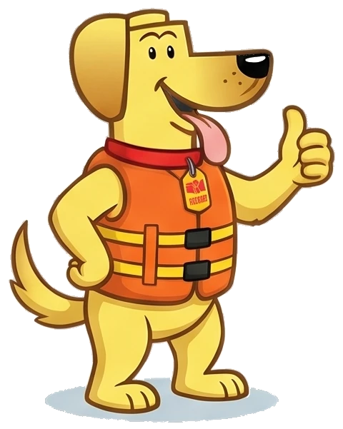
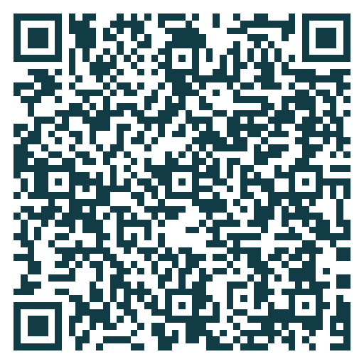
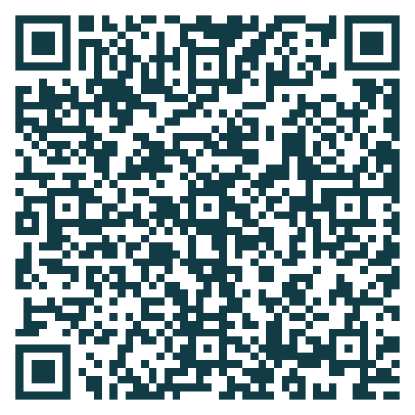

Bobber QR poster
Print these two pages for a lake office, classroom, or outreach table. Each poster has a QR code that opens the live site. Print at 100% or actual size.
U.S. Army Corps of Engineers · Tulsa District
Bobber the Water Safety Dog

Scan for water safety fun.
Meet Bobber, play the safety game, and print free activities for kids and families.

Scan with your phone camera.
usaceswosu.github.io/Tulsa-District-Water-Safety-Web-Platform/
Wear a life jacket. Swim with a buddy. Look out for each other.
Free water safety resources from the U.S. Army Corps of Engineers, Tulsa District.
Cuerpo de Ingenieros del Ejército de EE. UU. · Distrito de Tulsa
Bobber, el perro de seguridad acuática

Escanea para divertirte con seguridad.
Conoce a Bobber, juega y descarga actividades gratis para niños y familias.

Escanea con la cámara de tu teléfono.
usaceswosu.github.io/Tulsa-District-Water-Safety-Web-Platform/?lang=es
Usa tu chaleco salvavidas. Nada con un compañero. Cuídense entre todos.
Recursos gratuitos de seguridad acuática del Cuerpo de Ingenieros del Ejército de EE. UU., Distrito de Tulsa.